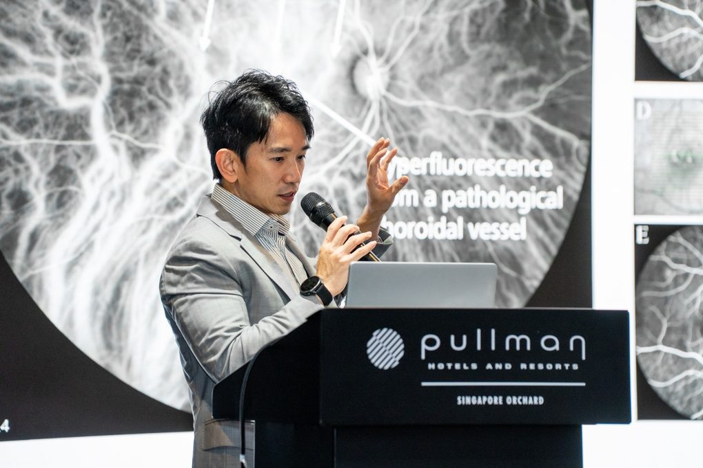

A note on audience and disclosure
This article is written for referring optometrists, ophthalmologists and trainees. It summarises published evidence for educational purposes and is not a treatment recommendation for any individual patient.
I am a speaker for ZEISS and for Roche. This piece is adapted from an invited lecture given at a ZEISS-sponsored meeting. Where I describe device capability, I state it as published, and availability differs between markets.
Optical coherence tomography and OCT-angiography have taken over most of the diagnostic work that once required dye. I inject contrast far less often than I used to. So when does indocyanine green angiography still change either what I see or what I do?
Moving from an institutional practice to private practice made that question unavoidable. At the institute I had a broad imaging toolkit on tap, and I often imaged because the test was there. In private practice I ask which image answers the question in front of me today. Fewer tests, chosen deliberately, arriving at the same diagnosis.
ICG still earns its place, in a defined set of situations. What follows is where those situations are, what I look for, and how I acquire and read the study.

Why the Choroid Still Needs a Dye
Each modality answers a different question, and none of them answers all of them. Colour fundus photography documents. OCT shows structure, fluid and activity. Fluorescein angiography shows leakage, perfusion and the leak point. Autofluorescence reports retinal pigment epithelium health and chronicity. OCT-angiography maps vasculature non-invasively, but statically. ICG angiography shows the choroid.
Two properties explain why the dye is hard to replace. Indocyanine green is almost entirely protein-bound, so it stays within the choroidal circulation rather than diffusing out as fluorescein does. It also excites and emits in the near-infrared, which passes through the pigment epithelium, macular pigment and a reasonable thickness of blood. That combination is what lets ICG report on choroidal vessels, and see lesions that other modalities cannot reach.
When I Reach for ICG
For the comprehensive ophthalmologist, this is the practical list. I reach for ICG when I suspect polypoidal choroidal vasculopathy, and want to define polypoidal lesions and the branching neovascular network. When central serous chorioretinopathy is atypical, recurrent or chronic, both to separate it from pachychoroid neovasculopathy and to size a photodynamic therapy spot. When I suspect occult or type 3 disease and the OCT and fluorescein do not settle it. When there is a choroidal mass or a masquerade to sort out. And when a lesion sits under haemorrhage, where near-infrared imaging sees through.
Before the study I ask about shellfish or iodine allergy, and about liver and renal disease.
Posterior uveitis is a major indication for ICG, but I will not discuss it here, to keep the focus on retinal disease.
Reading the Angiogram
The normal study runs through three phases, and knowing them is what makes the abnormal findings legible.
- Early phase, 0 to 3 minutes. At around 2 seconds the choroidal arteries and choriocapillaris fill and the watershed stays dark. By 3 to 5 seconds the larger choroidal veins and the retinal arterioles fill. From 6 seconds to 3 minutes the watershed fills, and the arteries and large veins begin to fade.
- Middle phase, 3 to 15 minutes. Retinal and choroidal vessels fade.
- Late phase, 15 to 30 minutes. Extrachoroidal staining appears and the retinal vessels are no longer seen.
PCV: The Flagship Indication
ICG remains the reference standard for polypoidal choroidal vasculopathy, because it is what shows the polypoidal lesions and the branching neovascular network directly.
That position has narrowed. OCT read together with OCT-angiography now diagnoses most polypoidal disease, with a reported area under the curve of 0.96. So I no longer order ICG as a first test in every suspected case. I use it for completeness of diagnosis, and for treatment planning in refractory cases.
Where it changes what I do is more specific. The ICG footprint of the lesion defines the photodynamic therapy spot. It lets me monitor polyp regression over time. And going widefield catches extramacular polyps that a macula-only field would miss.
ICG also lets me define cluster-type polyps, which carry a higher risk of massive submacular haemorrhage. That makes the phenotype an important prognostic indicator, not simply a descriptive one.
Polyp Closure: The Durability Endpoint
Vision tracks with fluid on the OCT, and an eye can see well with polyps still present. PLANET showed that. Closure is a different endpoint, and arguably a more important one.
Complete polyp closure independently lowers recurrence, lowers injection burden, and lowers the risk of massive submacular haemorrhage, particularly with cluster configuration. In EVEREST II, combination therapy roughly doubled closure, 69 per cent against 35 per cent. In a more recent cohort of eyes treated with fixed-dosing aflibercept, eyes achieving complete polypoidal regression had a 25 per cent probability of recurrence and a mean recurrence time of 28.8 months, against a higher and earlier recurrence rate in eyes with incomplete regression.
"Closure is an ICG endpoint. OCT-angiography misses slow-flow polyps, so it cannot reliably tell you the polyp has closed. If closure is the goal, ICG is how you know you have achieved it."
Central Serous and the Pachychoroid Spectrum
Central serous chorioretinopathy is fundamentally a choroidal problem, and ICG shows why. In the early phase there is delayed arterial filling. In the mid phase there is choroidal vascular hyperpermeability. On widefield imaging there are engorged vortex veins with anastomosis across the horizontal watershed.
In clinic that does three things for me. It confirms the diagnosis when the picture is atypical. It separates plain central serous from pachychoroid neovasculopathy, which is a type 1 lesion, and prompts me to look for polyps and a branching network in atypical eyes. And it localises the hyperpermeability, so I can plan guided, reduced-fluence photodynamic therapy rather than treating blind.
When OCT and Fluorescein Are Equivocal
The plaque is late occult, type 1 neovascularisation, and ICG characterises it where fluorescein shows only ill-defined late leakage. The hot spot is type 3 disease, retinal angiomatous proliferation, a focal intense point that ICG confirms along with the retinal-choroidal anastomosis.
OCT-angiography now does much of this without dye, so I position ICG here as a problem-solver rather than a first-line test. I reach for it when the OCT and fluorescein leave me uncertain, or when the lesion is masked.
Masses, Masquerades and Blocked Views
ICG helps me tell choroidal masses apart, within limits. A circumscribed choroidal haemangioma shows rapid, intense early hyperfluorescence followed by a characteristic late wash-out. That is genuinely useful for separating an amelanotic haemangioma from melanoma or metastasis, and it supports photodynamic therapy planning. The hyperfluorescence can be treated as pathognomonic even when the late wash-out is absent.
ICG does not reliably distinguish a naevus from a melanoma or a metastasis, because intrinsic tumour vasculature is not specific. Choroidal lymphoma can resemble granulomatous uveitis. I use ICG to confirm a haemangioma, not to exclude a malignancy.
Where a lesion sits under haemorrhage, near-infrared imaging sees through and can reveal an underlying neovascular lesion. In inherited retinal disease, Stargardt macular dystrophy shows the familiar dark choroid on fluorescein, while on late-phase ICG the atrophic areas turn dark. That dark atrophy reflects choriocapillaris loss and helps separate Stargardt from atrophy of other causes.
What Modern Widefield Platforms Add
Current widefield platforms make ICG easier to acquire, in four ways.
- Field. Polyps, peripheral networks and choroidal venous overload extend well beyond the posterior pole. A single 133 degree capture, extended to 267 degrees on montage, catches disease that a 30 to 55 degree field misses.
- True colour and resolution. RGB multi-channel imaging at 7.3 microns gives true colour with channel separation, where laser systems build pseudo-colour from red and green lasers with no blue channel.
- Acquisition in a real clinic. Non-mydriatic capture down to a 2.5 mm pupil, in a single shot, with fewer lid and lash artefacts and minimal peripheral distortion. This matters with less cooperative patients.
- Fluorescein and ICG together. Simultaneous capture from one dye sequence, with a movie mode across the angiography modes that is useful for the early phase, and exposure optimisation for the infrared signal.
The review side matters as much as capture. I read the angiography beside registered OCT, OCT-angiography and true-colour fundus on one screen, compare up to three visits for change, and use advanced RPE analysis to follow polyp and pigment epithelial detachment change over time.
How I Image for Polyps
The protocol matters if you intend to trust polyp closure.
Early · first minute
Catch the filling
Polyps fill early. The EVEREST reading centre timed polyp filling at roughly 7 to 40 seconds, so I run the dynamic or movie mode here to capture filling and any pulsation.
Mid · 3 to 5 minutes
Define the lesion
This is where I delineate the polypoidal lesions and the branching neovascular network, and where the footprint for photodynamic therapy planning comes from.
Late · 20 to 30 minutes
Wash-out and halo
I look for wash-out, the hypofluorescent halo and the plaque. I also go widefield here for extramacular polyps and dilated vortex veins.
To judge closure I use the same protocol at baseline and at follow-up, and complete regression means the polyp hyperfluorescence has gone. That mirrors trial practice. SALWEEN, the faricimab trial in polypoidal disease, reads ICG angiography for complete polyp regression at weeks 16, 48 and 108 through a central reading centre.
Practice Points
- ICG is one component of multimodal imaging for retinochoroidal disease, not a routine first test. OCT and OCT-angiography handle most day-to-day diagnosis now.
- For diagnosis, it earns its place in pachychoroid disease, occult MNV, and choroidal tumours and masquerades.
- For treatment, it earns its place in chronic central serous and in polyp closure. Only ICG confirms closure, which is the durability and safety endpoint.
- Integrate rather than isolate. ICG read alongside registered OCT and OCT-angiography is what supports planning and monitoring of response.
- Modern platforms make ICG widefield, true colour and straightforward to acquire, so there are fewer reasons to skip it when it would change management.
Selected References
Key published sources underpinning this synthesis. Full citations are available on request.
- Wong CW, Yanagi Y, Lee WK, Ogura Y, Yeo I, Wong TY, Cheung CMG. Age-related macular degeneration and polypoidal choroidal vasculopathy in Asians. Prog Retin Eye Res. 2016;53:107–39.
- Koh A, Staurenghi G, Chhablani J, Panos GD, Tan CS, et al. Long-term management of polypoidal choroidal vasculopathy: a narrative review. Ophthalmol Ther. 2026.
- Cho SC, Cho J, Park KH, Woo SJ. Massive submacular haemorrhage in polypoidal choroidal vasculopathy versus typical neovascular age-related macular degeneration. Acta Ophthalmol. 2021;99(5).
- Chaikitmongkol V, Tadadoltip W, Patikulsila D, Srisomboon T, Narongchai C, Choovuthayakorn J, et al. Recurrent polypoidal lesions after achieving inactive polypoidal choroidal vasculopathy following 1-year fixed-dosing aflibercept treatments. Asia Pac J Ophthalmol. 2025;14(1).
- Invernizzi A, et al. Choroidal imaging: a review. Asia Pac J Ophthalmol. 2020;9(4):335–48.
- EVEREST II and PLANET randomised trials in polypoidal choroidal vasculopathy; SALWEEN faricimab trial design (ICG-read polyp regression at weeks 16, 48 and 108).